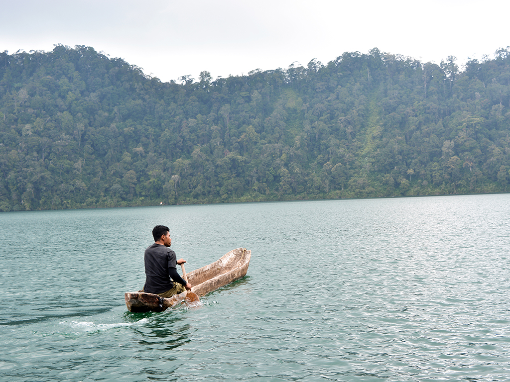

Hobi Detail
Hobi Membaca
Membaca merupakan kegiatan melihat tulisan bacaan dan proses memahami isi teks dengan bersuara atau dalam hati. Membaca adalah mengungkapkan suatu imajinasi terhadap suatu pembaca yang disukai khalayak ramai dan juga dimengerti oleh seseorang yang dicintai. Kegiatan membaca meliputi membaca nyaring dan membaca dalam hati. Membaca nyaring adalah kegiatan membaca yang dilakukan dengan cara membaca keras di depan umum. Sedangkan kegiatan membaca dalam hati adalah kegiatan membaca dengan seksama yang dilakukan untuk mengerti dan memahami maksud atau tujuan penulis dalam media tertulis.
5 Jenis Membaca- Membaca teliti yaitu membaca yang penekannya diarahkan pada keterampilan memahami dan menguasai isi bacaan,
- Membaca pemahaman yaitu membaca yang penekannya diarahkan pada keterampilan memahami dan menguasai isi bacaan,
- Membaca ide yaitu membaca dengan maksud mencari, memperoleh serta memanfaatkan ide-ide yang tedapat pada bacaan,
- Membaca kritis yaitu membaca yang dilakukan secara bijaksana, penuh tegang hati, mendalam, evaluatif, serta analitis, bukan hanya mencari kesalahan,
- Membaca telaah bahasa.
Kegiatan membaca memerlukan pemahaman, interpretasi dan penilaian informasi serta tanggapan terhadap bacaan, sehingga terjadi proses berpikir. Pengembangan kemampuan berpikir setiap individu dapat dicapai melalui kegiatan membaca. Selama membaca, individu memperoleh pengetahuan yang berguna untuk meningkatkan kapasitas berpikirnya.
Hobi Olahraga
Olahraga adalah suatu bentuk fisik yang terencana dan terstruktur yang melibatkan gerakan tubuh berulang-ulang dan ditujukan untuk meningkatkan kebugaran jasmani. Terdapat beragam manfaat olahraga yang dapat dirasakan, baik dalam jangka pendek maupun jangka panjang. Selain bermanfaat untuk kesehatan fisik, olahraga juga diketahui dapat meningkatkan kualitas hidup seseorang.
Manfaat Olahraga- Menjauhkan dari Beragam Penyakit,
- Membuat Tubuh Lebih Tegap,
- Merangsang Pertumbuhan Ideal,
- Membantu Menjaga Kesehatan Kulit.

Hobi Menulis
Menulis atau menyurat adalah suatu kegiatan untuk menciptakan suatu catatan atau informasi pada suatu media dengan menggunakan aksara. Menulis biasa dilakukan pada media berbentuk kertas dengan menggunakan alat-alat seperti pena atau pensil. Pada awal sejarahnya, menulis dilakukan dengan menggunakan gambar, contohnya tulisan hieroglif pada zaman Mesir Kuno.
Manfaat Menulis- Meningkatkan Kreativitas,
- Wadah untuk Menuangkan Emosi/Perasaan,
- Menjadi Lebih Terorganisir,
- Memperkuat Daya Ingat,
- Meningkatkan Kemampuan Dalam Berbahasa yang Baik,
- Menghasilkan Uang.
Hobi Fotografi
Fotografi (bahasa Inggris: photography, yang berasal dari kata Yunani yaitu "phos": cahaya dan "graphien": melukis/menulis) adalah proses melukis/menulis dengan menggunakan media cahaya. Sebagai istilah umum, fotografi berarti proses atau metode untuk menghasilkan gambar atau foto dari suatu objek dengan merekam pantulan cahaya yang mengenai objek tersebut pada media yang peka cahaya. Alat paling populer untuk menangkap cahaya ini adalah kamera. Tanpa cahaya, tidak ada foto yang bisa dibuat.
Manfaat Fotografi- Abadikan momen,
- Sebagai Ilmu,
- Storytelling,
- Membawa Anda Lebih Dekat dengan Alam,
- Perubahan sosial,
- Meningkatkan pendapatan.
Hobi Berkebun
Berkebun adalah proses menanam tanaman untuk sayuran , buah-buahan , bunga , tumbuhan , dan penampilannya dalam ruang yang telah ditentukan. Kebun memenuhi beragam tujuan, terutama produksi kawasan yang indah secara estetika, obat-obatan, kosmetik, pewarna, makanan, racun, habitat satwa liar, dan barang-barang yang dapat dijual (lihat pasar berkebun). Orang sering ikut serta dalam berkebun karena manfaat terapeutik, kesehatan, pendidikan, budaya, filosofis, lingkungan, dan agama.
Manfaat Berkebun- Mengontrol berat badan,
- Menurunkan risiko penyakit jantung,
- Meningkatkan daya tahan tubuh,
- Menjaga kesehatan otak,
- Mengurangi stres,
- Melatih kesabaran,
- Pola makan jadi lebih sehat.
Hobi Memasak
Memasak adalah kegiatan menyiapkan makanan dengan cara mengolah dan memanaskan bahan makanan agar bahan makanan tersebut bisa dikonsumsi. Memasak terdiri dari berbagai macam metode, teknik, peralatan, dan kombinasi bumbu dapur. Hal tersebut dilakukan untuk mengatur rasa, memudahkan makanan untuk dicerna, mengubah makanan dari segi warna, rupa, rasa, tekstur, penampilan dan nilai nutrisi. Memasak secara umum adalah persiapan, proses memilih, mengatur kuantitas, dan mencampur bahan makanan dengan urutan tertentu dengan tujuan untuk medapatkan hasil yang diinginkan. Memanaskan bahan makanan umumnya, walaupun tidak selalu, perubahan bahan makanan tersebut secara kimiawi, mengakibatkan adanya perubahan rasa, tekstur, penampilan, dan nilai nutrisi.
Manfaat Memasak- Meningkatkan kepercayaan diri,
- Menjadi sarana bersosialisasi,
- Melatih kreativitas,
- Membangun rutinitas.